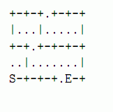

由于牛奶市场的需求，奶牛必须前往城市，但是唯一可用的交通工具是出租车．教会奶牛如何在城市里打的．
给出一个城市地图，东西街区E(1≤E≤40)，南北街区N(1≤N≤30).制作一个开车指南给出租车司机，告诉他如何从起点（用S表示）到终点（用E表示）．每一个条目用空格分成两部分，第一个部分是方向（N，E，S，W之一），第二个是一个整数，表示要沿着这个方向开几个十字路口．如果存在多条路线，你应该给出最短的．数据保证，最短的路径存在且唯一． 地图中“+”表示十字路口，道路用“I”和“一”表示．建筑和其他设施用“．”表示．下面是一张地图：

出租车可以沿着东，北，西，北，东开两个十字路口，以此类推．具体将由样例给出